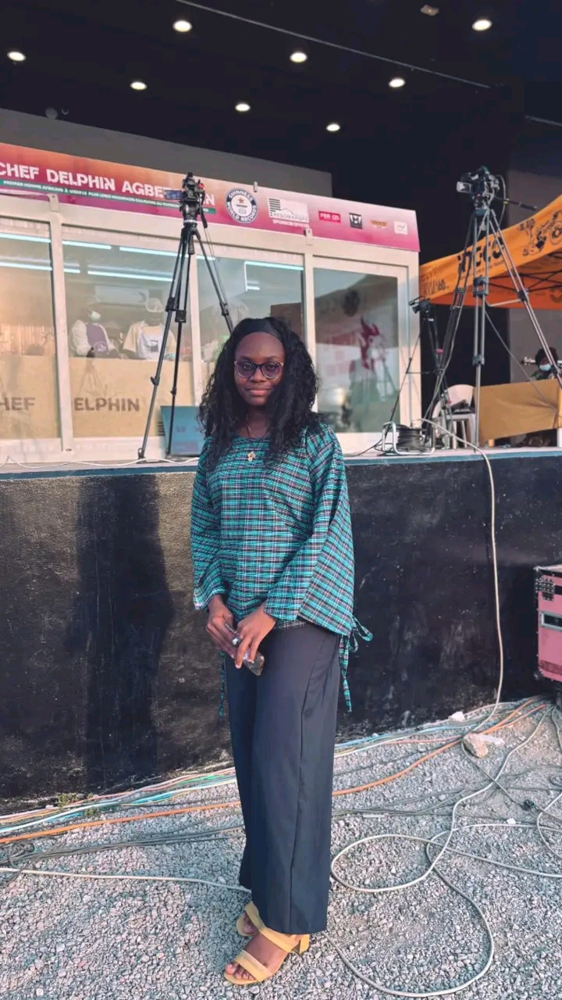
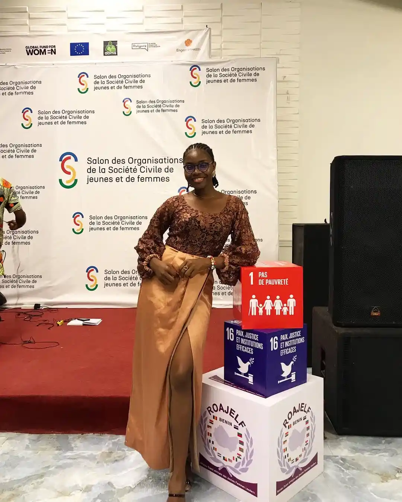
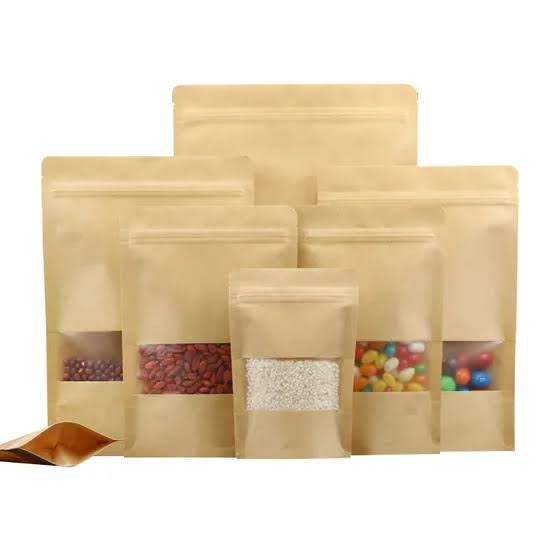

Portfolio de Synnova Tocloe, animatrice Bénin et communicatrice Grand-Popo. Chaque image, chaque projet et chaque événement raconte une histoire d’impact local et créatif.

Événements
Marathon culinaire de la Chef Keith Sonon

Cinéma & Régie
Salon des Organisations de la Société Civile des jeunes et de femmes du Bénin
📱Photo ici
Communication
Campagne digitale — Lancement de marque

Entrepreneuriat
Gamme emballages biodégradables
Événements
Conférence — Panel Femmes & Leadership
Événements marquants
Les moments qui ont compté. Ceux où j'ai laissé une empreinte durable sur scène, en salle, ou derrière la caméra.
2024
Festival International des Arts du Bénin
Participation active en tant que régisseuse plateau et actrice — un rendez-vous incontournable de la culture africaine contemporaine.
Cinéma & Régie
2024
Gala Annuel — Leaders d'Afrique de l'Ouest
Animatrice principale de la soirée de gala réunissant entrepreneurs, institutionnels et décideurs régionaux.